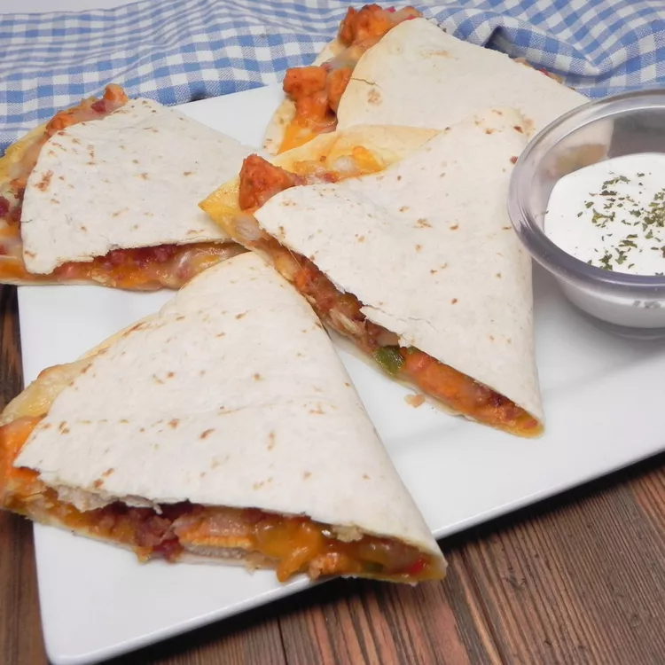

Chicken Quesadilla

Chicken Quesadilla
Chicken, cheese, and flavor clammed in a tortilla. These are worth the prep work.
Ingredients:
- pound skinless, boneless chicken breast, diced
- 1 (1.27 ounce) pack fajita seasoning
- 1 tablespoon vegatable oil
- 2 green bell peppers, chopped
- 2 red bell peppers, chopped
- 1 onion, chopped
- 10 (10 inch) flour torillas
- 1 (8 ounce) package shredded Cheddar cheese
- 1 (8 ounce) package Monterey Jack cheese
- 1 tablespoon bacon bits
Directions:
- Preheat the broiler. Lightly grease a baking sheet.
- Toss chicken with fajita seasoning, then spread onto the prepared baking sheet. Place under the broiler and cook until chicken is cooked through and is no longer pink in the center, about 5 minutes.
- Preheat the oven to 350 degrees F.
- Heat oil in a large saucepan over medium heat. Stir in bell peppers, onions, and broiled chicken. Cook and stir until vegetables have softened, about 10 minutes.
- Layer half of each tortilla with chicken and vegetable mixture, Chedder cheese, Monterey Jack cheese, and bacon bits. Fold tortillas in half and place onto a baking sheet.
- Bake quesadilla in the preheated until cheese have melted, about 10 minutes. Cut each quesadilla into wedges and serve.